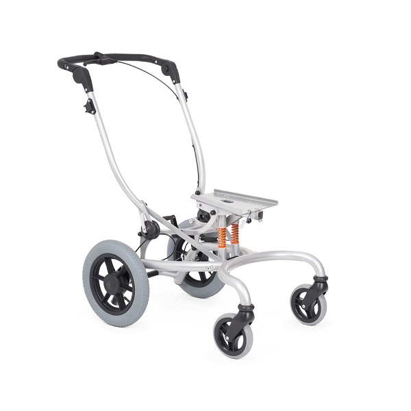
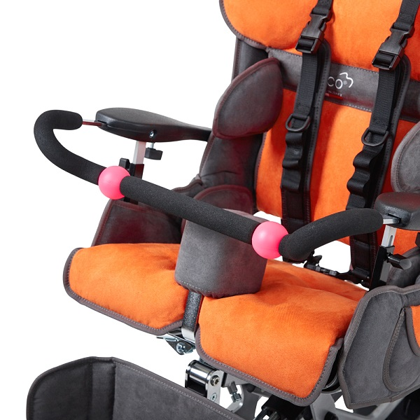
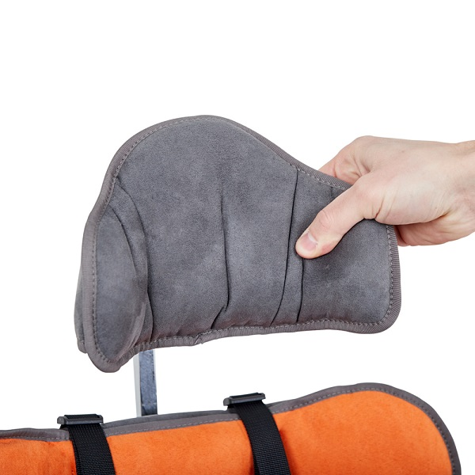
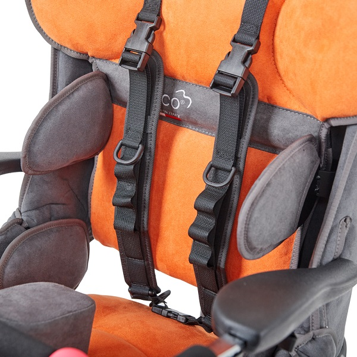
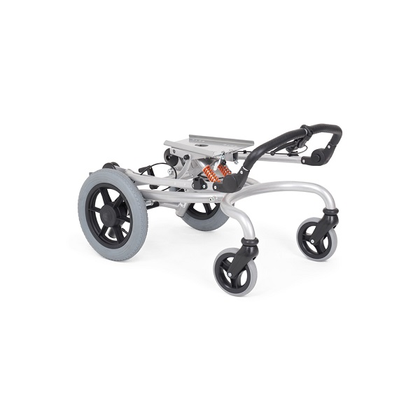
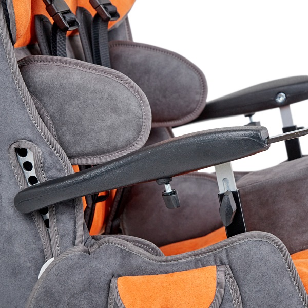
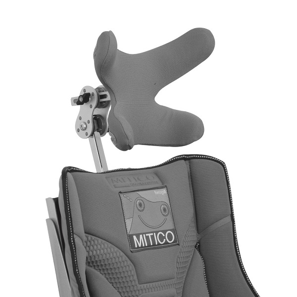
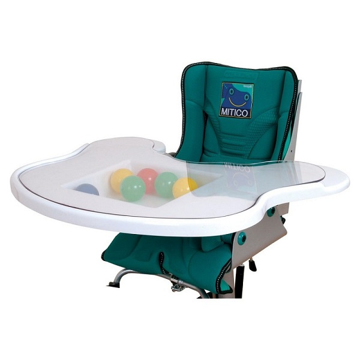
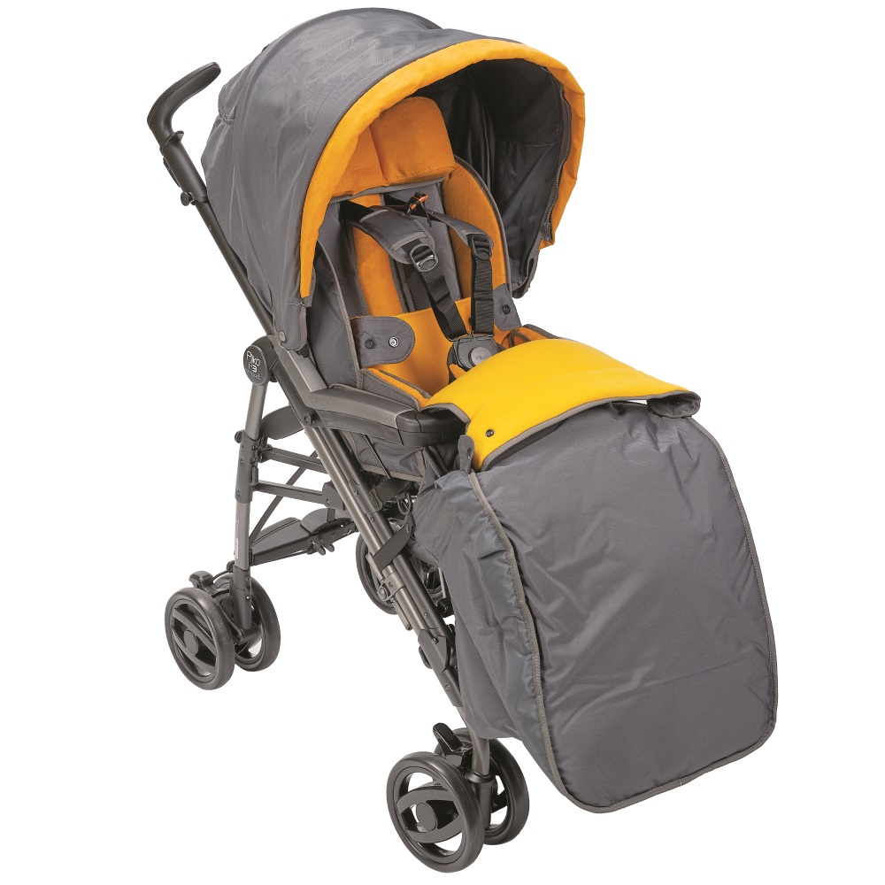

Детская инвалидная кресло-коляска Fumagalli Mitico Simple Fuori (прогулочная)


Детская инвалидная кресло-коляска Fumagalli Mitico - это инновационная система ухода за особенными детьми. Коляска примечательна тем, что является своеобразным конструктором: благодаря выбору дополнительных аксессуаров Вы сможете собрать идеальную для Вашего ребенка модель. Кресло способно «расти» вместе с малышом - так Вы сэкономите на покупке колясок больших размеров.
Выезд специалиста сборка и настройка коляски индивидуально под Вашего ребенка бесплатно
Каждому покупателю колясок для детей с ДЦП мы выдадим всю необходимую для предоставления в ФСС документацию. Это позволит вам получить компенсацию финансов, затраченных на приобретение средства передвижения.
Особенности кресло-коляски Mitico для детей с ДЦП
- Кресло-коляска для детей с ДЦП (уличный вариант)
- Сиденье - съемное, с возможностью установки на различные опорные рамы
- 2 размера: для детей от 3 до 12 лет и для малышей от 1 до 4 лет
- Рама Fuori New (базовая комплектация) - компактная, с хорошей амортизацией, позволяющая взрослым вплотную подходить к ребенку
- Обивка – съемная, мягкая, легкомоющаяся, с «дышащей» подкладкой, со встроенной противопролежневой подушкой
- Средний упругий слой для амортизации непроизвольных движений
- Внутренний слой - с пластичными пелотами
- Боковые опоры, абдуктор
- Боковые фиксаторы таза с независимой регулировкой
- Регулировка глубины сиденья, высоты и угла наклона спинки
- Подголовник - регулируемый
- Цвет сиденья - зеленый, оранжевый
- Другие рамы: Buggy - для длительных прогулок на улице, с хорошей амортизацией; Bimbo - для кресел малого размера, с функцией размещения ребенка лицом к родителям или лицом к дороге; Rolling - форма трехколесного скутера, для длительных прогулок по улице
Базовая комплектация детской инвалидной кресло-коляски Fumagalli Mitico
- сиденье
- рама прогулочная Fuori New
- подголовник
- ремень 5-ти точечный
- ручка-ограничитель
- боковые поддержки
- опора для ног
- подножка
- абдуктор
- дождевик (короткий и большой на всю коляску)
Дополнительно можно приобрести
- теплую муфту для ног
- столик
Особенности кресла-коляски для детей с ДЦП Fumagalli Mitico Fuori
-

Рама Fuori New
-

Настройка кресла
-

Безопасность
-

Продуманная обшивка
-

Фиксация и комфорт
-

Удобство пользования
-

Комфортабельность
Дополнительная комплектация кресла-коляски для детей с ДЦП Fumagalli Mitico Fuori
-

Подголовник поэтапно регулируемый
-

Столик с множеством функций
-

Зимний чехол
Технические характеристики кресла-коляски для детей с ДЦП Fumagalli Mitico Fuori
| Характеристики | Размер 1 | Размер 2 |
| Возраст, лет | 4-10 | 9-13 |
| Высота сиденья, мм | 450 | 450 |
| Высота спинки, мм | 370-430 | 450-530 |
| Длина подножек, мм | 180-390 | 180-390 |
| Регулировка глубины сиденья | да | да |
| Угол наклона сиденья, ° | 30 | 30 |
| Базовая комплектация | Кресло Mitico simple, прогулочная рама Fuori, капюшон, подножка, абдуктор, съемный поручень, ремень безопасности | |
| Регулировка угла наклона спинки | да | да |
| Регулировка подлокотников по высоте | да | да |
| Съемные подножки | да | да |
| Тип рамы | Складная | Складная |
| Угол наклона спинки, ° | -40/+6 | -45/+10 |
| Ширина в рабочем состоянии, мм | 510 | 510 |
| Ширина сиденья, мм | 200-260 | 250-310 |
| Длина в рабочем состоянии, мм | 750 | 750 |
| Высота в рабочем состоянии, мм | 1045 | 1045 |
| Грузоподъемность, кг | 50 | 50 |
| Материал рамы | Алюминиевый сплав | |
| Материал спинки и сиденья | Влагонепроницаемый материал | |
Ключевые преимущества кресла-коляски для детей с ДЦП Fumagalli Mitico Fuori
| Характеристики | Mitico Fuori |
| Покупателям нравится | Широкие возможности индивидуальных регулировок позволяет коляске расти вместе с ребенком. |
| Ключевая особенность | Съемные абдуктор, боковые поддержки и подголовник с регулировкой по высоте. Универсальная рама Fuori подходит для дома и улицы, легко проходит в дверные проемы, не занимает много места и позволяет близким вплотную подходить к ребенку. |
| Важно отметить | Складная рама. Возможность установки сиденья на рамы: Fuori, High Low, Dentro. |
Обеспечим техническими средствами реабилитации по электронным сертификатам
остались вопросы ?
Оставьте контакты и мы скоро свяжемся с вами